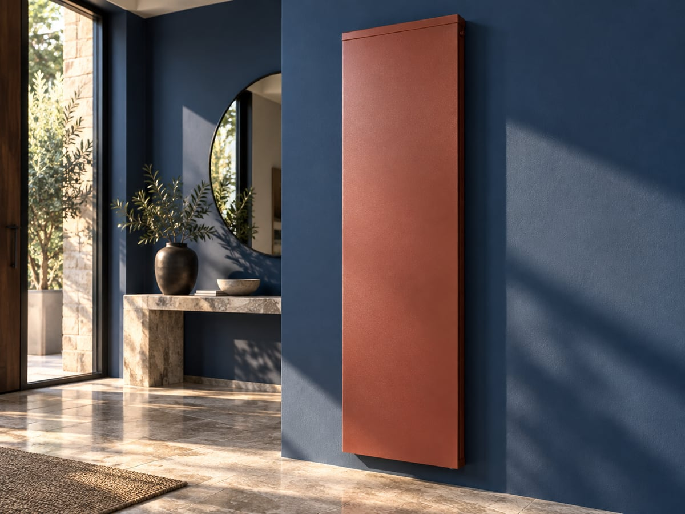
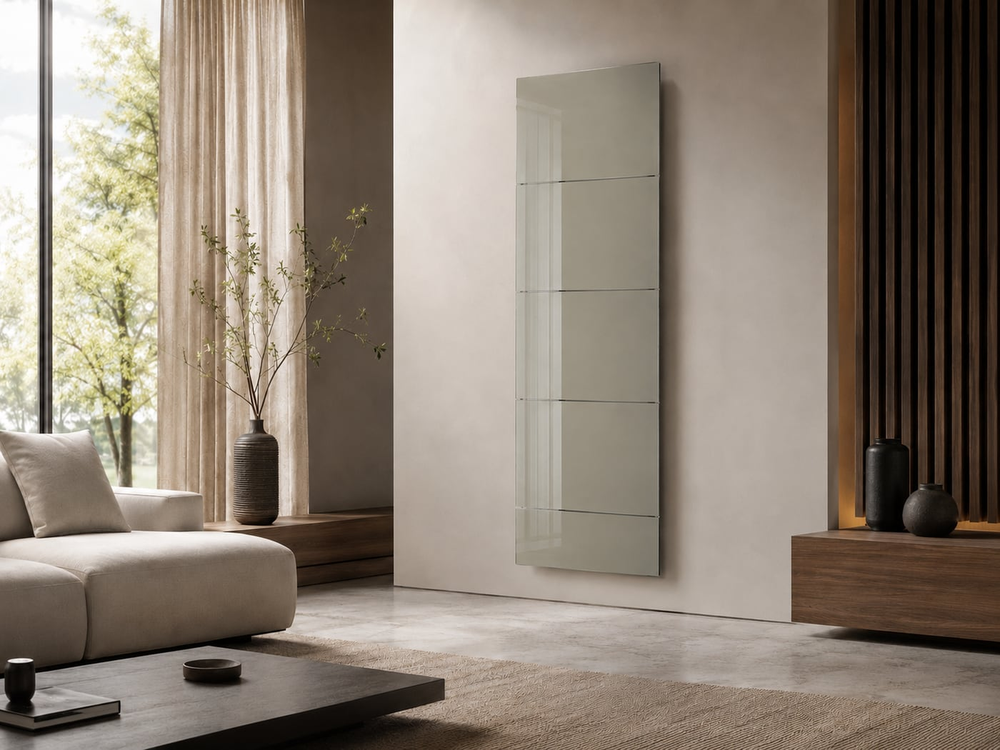
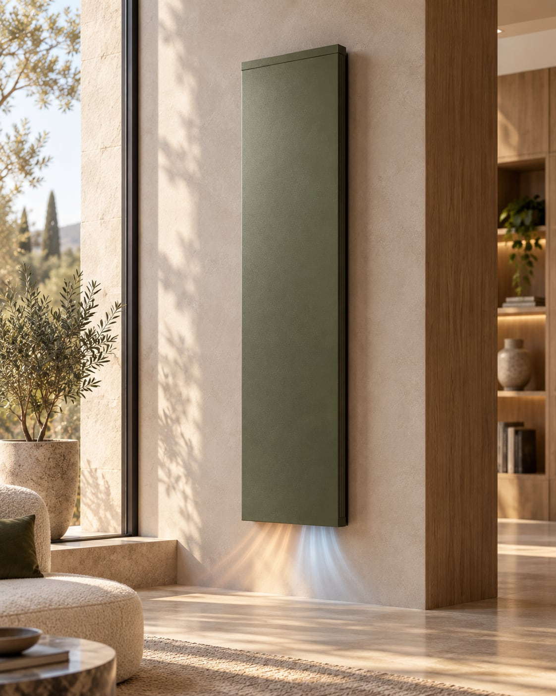
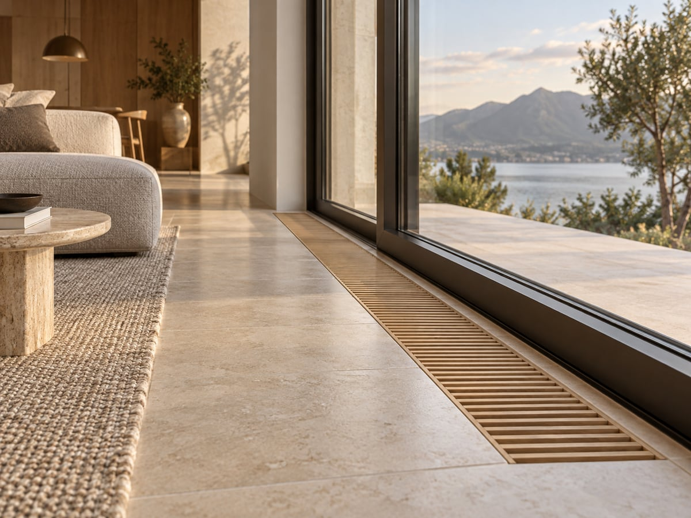
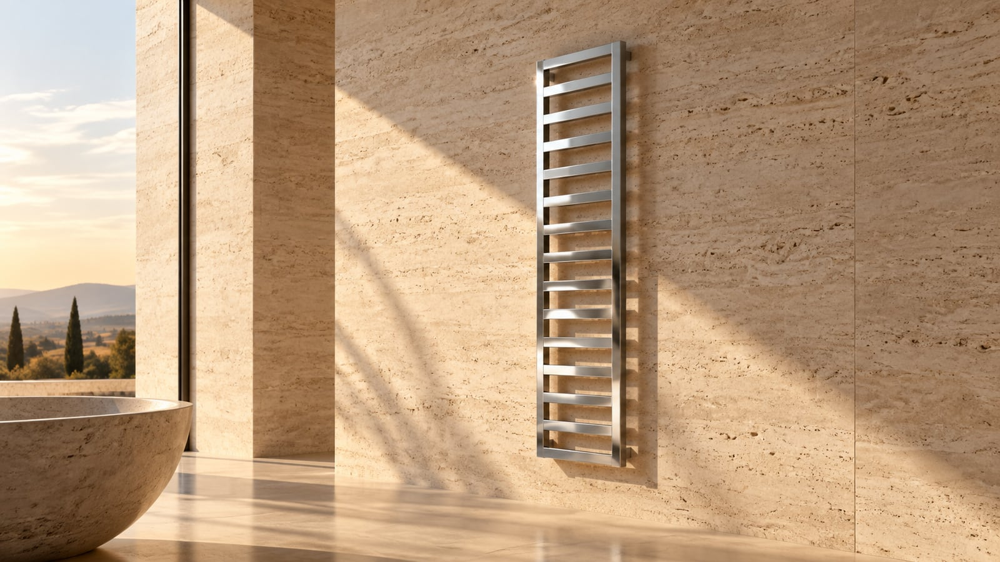

Línea 01 — Baja temperatura
Radiadores de baja temperatura.
Seis modelos para trabajar a 35–45 °C, de diseño limpio y alta eficiencia: T30, Tower, Decor, Vent, Canales y Toalleros.
La gama, modelo a modelo.
02 — Modelos
 T30 →
Superficie continua y diseño limpio, ideal para aerotermia.
T30 →
Superficie continua y diseño limpio, ideal para aerotermia.

Tower → Vertical y esbelto: máxima potencia en poco ancho de pared.
Decor → Radiador vertical con acabado espejo integrado en el ambiente.
Vent → Convección forzada: una turbina interna acelera el calor.
Canales → Canal de suelo integrado a ras de pavimento, sin ocupar pared.
Toalleros → Calor y secado de toallas en el mismo circuito hidráulico.